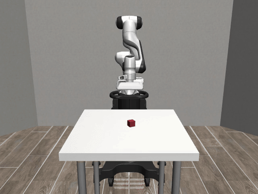

Measurements
Every figure below was measured on 2026-09-24, one machine per comparison, n=5 per mode with rotating run order unless stated. Evidence is committed — 447 files — so a clone re-derives all of it. Three numbers here replaced numbers we withdrew; the corrections ship with the measurements that forced them.
← back to the talk · deck · full talk
1 · The failure the talk opens on

asset-stale-verify-1790261498 ·
scenario: stale_600ms · outcome: cube_lifted · success: true · rejections: [] ·
robosuite 1.5.2 / mujoco 3.9.0. The task succeeds. The freshness contract does not.| quantity | value | meaning |
|---|---|---|
| control period | 20 ms | 50 Hz loop |
| contract bound (robosuite) | 250 ms | 12.5 control periods |
| contract bound (duck, derived) | 80 ms | 20 ms × (COAST_TICKS+1) |
| what it acted on | 600 ms | 30 control periods |
| episode wall time | 4,088 ms | 4 dispatches, 0 rejections |
2 · Build Cache — both rows
HIT 52 / MISS 0 · 9 tasks of 58 executed · helpers 0 · max_initiator_cores 0
The cache does not make your build faster. It makes throwing your workspace away cheap. Which is the operation a sandboxed agent loop performs on every candidate.
Cache key includes the rustc output path: a stable path with wiped contents gives
52/52 reuse; a fresh mktemp target per sample gives 1/52. That path identity is the
whole difference.
3 · Parallelism — what distribution has left to sell
Cold builds saturate at 3.28×. The rebuild that matters in a loop —
change one file — is 1.08×: effectively serial. The local crate chain
robot-safety-gate → swf-app → swf-cli is a dependency line, not a fan-out.
4 · Distribution — the negative result, published
Distribution genuinely happened: remote_tasks=50,
remoteCoreTime 39–42 s, two helpers, cc1 sampled on both, negative control
zero. It was still slower — and ib-benchmark.sh:176 passed -f
(--force-remote), idling four local cores (max_initiator_cores=0).
5 · The demo arc — where the six minutes actually go
| robosuite | duck (microduck) | |
|---|---|---|
| full arc | 76.58 s (21% of 360 s) | 193.89 s (54%) |
| scenario matrix | 36.17 s · 17 PASS / 0 FAIL | 57 checks |
| longest scenario | protocol_timeout 9,519 ms | — |
| other 15 scenarios | 1,341–2,434 ms each | — |
| succeed-while-wrong hook | yes | no — cliff 46–66 ms is below the 80 ms bound |
| contract in the type system | runtime check | yes — ObservationAge |
Build time is ~35% of the robosuite arc; the simulator matrix is ~47%. A perfect build cache cannot optimize the loop on its own — which is why cheap gates must reject bad candidates before they ever reach SIL.
6 · microduck — the contract in the type system
The same freshness contract, ported onto a real Rust biped whose control loop runs at 50 Hz
(pollen-robotics/microduck, Apache-2.0).
23 workspace members, 576 packages, 117k lines. Our port is committed as a patch against upstream
a9ec4b2:
2,953 lines, 29 files.
Here the rule is not checked at runtime. It is enforced by types:
Sensors { observed_at: Instant } // private — Instant::now() is the ONLY constructor,
// so a backend carries a stamp, it cannot write one
ObservationAge // no Default, no From<Duration>, no public field.
// ObservationAge::of(&Sensors) is the only way in
Safety::apply(.., age: Option<ObservationAge>)
// by value, by type: a dispatch site with no
// observation DOES NOT COMPILE"I checked the age" stops being a claim a caller can make.
..Sensors::default() stopped compiling in safety.rs's own tests — that is the rule working.
Staleness against the contract bound
Contract bound 80 ms = 20 ms × (COAST_TICKS+1) — derived from the loop rate, not chosen. The 250 ms figure on the robosuite harness is disclaimed in-repo as "an illustrative policy, not a hardware limit"; this one is arithmetic.
seeded (let _ = age;) | repaired | |
|---|---|---|
driving ticks carrying stale_observation | 0 of 273 | 266 of 266 |
| displacement @100 ms stale | flat on its side | 0.004 m, upright |
| its own odometry reports | 0.67 m of forward travel | — |
| loop health | — | 49.95 Hz, 0 missed ticks |
| cost when healthy | walks 0.949 m | walks 0.951 m — the gate is free |
| tests | 3 fail of 83 | 83 of 83 |
What this substrate cannot do
The measured balance cliff is 46–66 ms, which sits below the 80 ms bound.
So by the time staleness violates the contract, the duck has already fallen: there is no window where
it succeeds while the contract fails. The "robot succeeded, contract failed" hook belongs to the
robosuite demo, not this one. The harness measures this every run and prints
calibration: no.
What microduck shows instead is a robot whose own self-report is wrong — odometry claiming 0.67 m of travel while it lies on its side. That is the same failure as cargo's mtime fingerprint returning "nothing to do" when the source changed: a cheap, fast, self-reported signal, confidently wrong.
No footage: capturing MuJoCo frames needs the camera/frame-port pipeline, which was not
wired up. The full arc runs 193.89 s against the robosuite demo's 76.58 s, and three staging
fragilities (fixed port, fixed state dir, unscoped pkill) are unfixed — which is why
robosuite is the one to run live.
7 · The forgeries our own verifier passed
| # | mechanism | it printed | status |
|---|---|---|---|
| 1 | receipt asserted its own cache state | ratio=2.999x | closed |
| 2 | digest checked for shape; file never opened | ratio=11.948x | closed |
| 3 | ten real transcripts around a no-op tool | ratio=119.949x | open |
| 4 | duplicate build caption | ratio=900000x | closed |
| 5 | coverage matrix tests 0/50/600 vs a 250 ms bound | "complete coverage" | documented |
42 guard tests · 12 forgery classes closed · 1 residue, printed by the tool itself. A check wins against exactly the adversary who does not control its input.
8 · What is not claimed
- No speedup from distribution. The measured result was negative and is above.
- Cross-machine cache sharing is undemonstrated —
BuildCache.ServiceURLis empty on this grid. - The archived
21.426 s / 21.948 spair is not a cache benchmark and appears nowhere in the deck. - A cache-hit rate alone does not prove lower end-to-end latency — row 2 above is the counter-example.
- The 576-package workload result is pending; the run died on a missing system dependency.